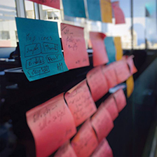

Like the majority of software development companies, ArabiaGIS has a professionally strong rooted background in traditional systems development. However, having used life cycles and project management methodologies for many years, we then decided to give some passionate and highly professional active team members the opportunity to experiment and improvise new evolutionary developments and trendy methodologies, namely Agile Development.
Our highly trained, skilled and innovative team within ArabiaGIS , has succeeded in changing the perception regarding projects, and as such, has made a stunning breakthrough in projects success rates and project completion within their stipulated budget in a timely manner. By providing high quality products, customer satisfaction and delight to all stakeholders and clients, the team was able to convince the management to use and implement Agile Development in major projects that require huge client involvement through the project life cycle.
Today, ArabiaGIS has developed its own custom development methodology based on PMI standards and that applies dynamic and trendy software engineering methods and tools. Our team members today, use the most effective-proven collaboration techniques in dealing with all project related issues; fully engaging all stakeholders and clients while keeping the robust natural nature of traditional systems.
At ArabiaGIS , we value product quality over procedures and bureaucratic documentations. Developing robust and scalable applications that will respond to our client’s needs is our number one priority. We believe that Waterfall and Agile are not contraries, and that we can combine at anytime, based on the needs of the project at hand.